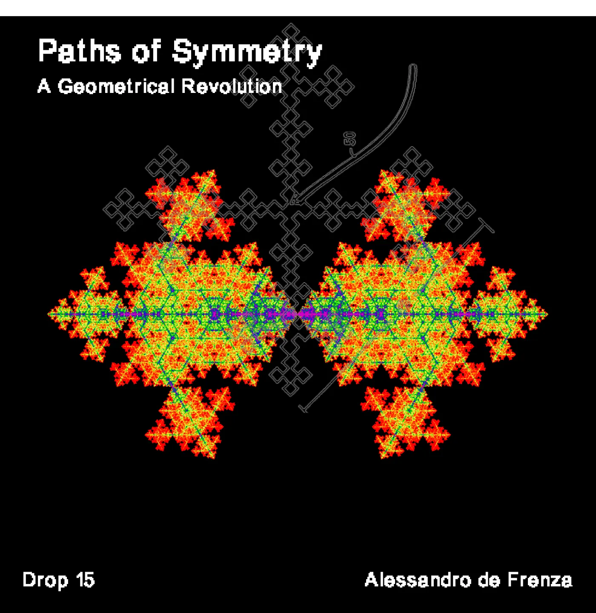
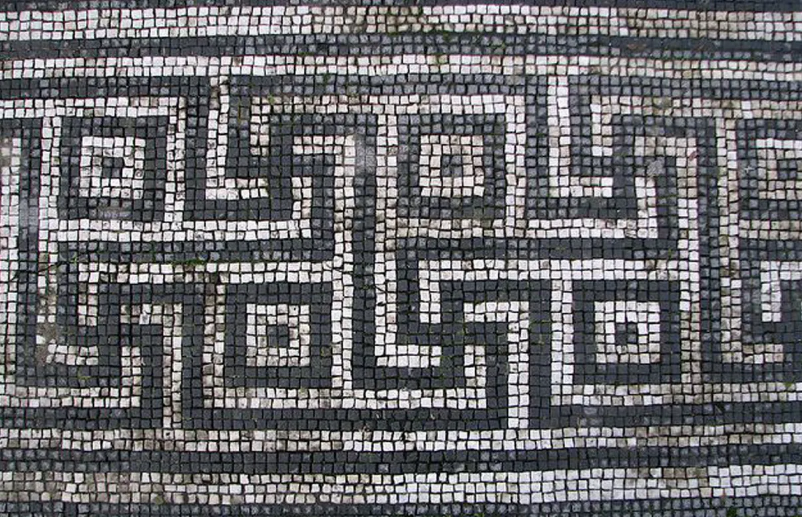
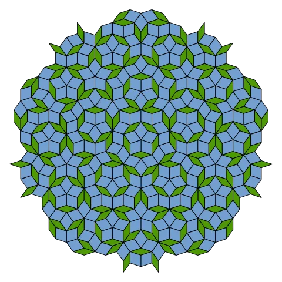
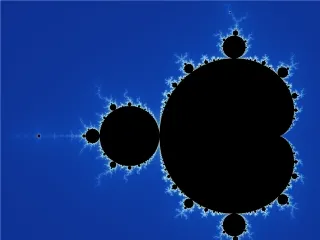
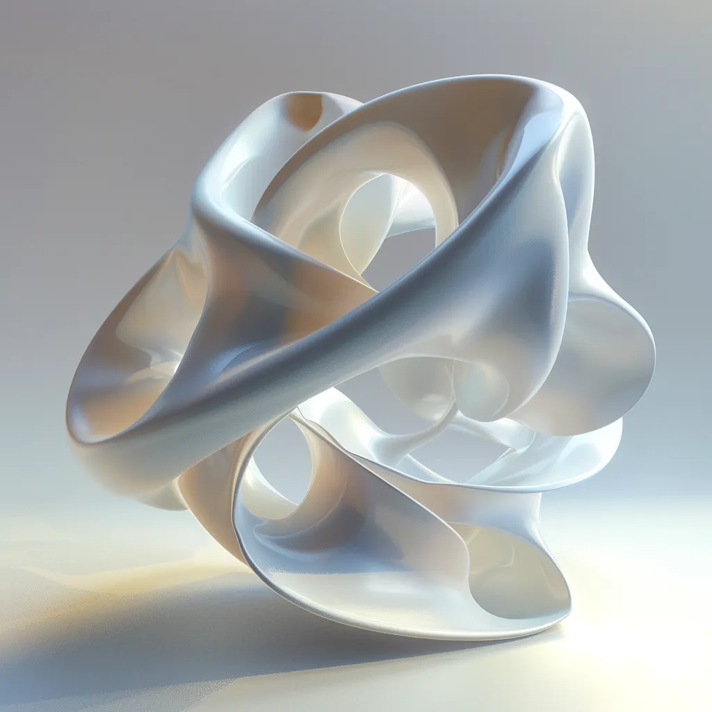
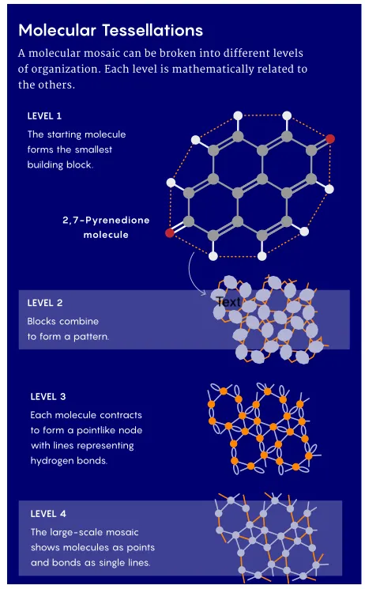

Drop #15 · June 6, 2024 · 10 min read
A Geometrical Revolution
Hey everyone (▰˘◡˘▰)
Welcome back to Drops, REINCANTAMENTO’s newsletter. Today we host a new text by Alessandro De Frenza, who authored Drop #11 some months ago.
Like Alessandro’s previous text, this DROP is a foray into a forest of mathematical and scientific concepts not so common on these pages. He guides us through the concept of symmetry, considering its manifold applications, from fractals to crystallography to new design patterns. The piece leads to consider a new perspective on the physical world, a harbinger of a geometric revolution.
Alessandro de Frenza is a PhD student in materials science at Sorbonne Université. He specializes in experiments in large-scale facilities, DFT simulations, and other computational chemistry tools. He works on the optical activity of X-rays and often deals with crystallography concepts. Alessandro is passionate about spreading scientific knowledge to a broader audience. If you want to be in contact, here’s his email address.
If you want to propose an article for this newsletter send an email to reincantamento@gmail.com and consider donating or a discounted subscription to support our work ^_^

The study of symmetry operations and forms has always attracted researchers from different fields, particularly mathematicians, chemists, and computer scientists. Historically, human beings are fascinated by how geometrical figures can fulfill their sense of order and how they are interconnected to form repeating and non-repeating patterns.
One of the simplest examples is tiling a bathroom floor. By using square tiles, you can cover the entire floor without leaving any gaps, creating a 'periodic' pattern where the same tile is repeated throughout the space.
However, not just periodic repetition is interesting (and useful too), but more recently, starting from the 1960s, scientists started to explore aperiodic tiles, and in general, the contrast between periodic and aperiodic structures. A periodic shape or, more generally speaking, a periodic entity is definable through a symmetry operation while you can’t do the same when dealing with aperiodic entities.
So, what is symmetry, or better, a symmetry operation? Although it is not easy to give a simple and clear definition, symmetry can be defined as “the periodic repetition of an object in a space”. We notice how symmetry is not a fixed property but one discovered through a procedure namely by repeating an object in n-D space. Indeed, mathematicians provide a striking elegant definition of the symmetry operation:
“A symmetry operation leaves an object invariant after the application of it
So, for instance, my image reflected in the mirror is the product of a symmetry operation: it is a repetition of an object - my body - that leaves the object itself invariant. The same can be said for different geometrical figures like squares or equilateral triangles, which all possess symmetrical axes. The discreet charm of symmetry has intrigued the human brain since Antiquity: from Pythagoras to Aristotle through the crucial work of Plato’s Timeus, the Apollonian Greek mind fell in love with the harmony and elegance of symmetrical figures.

Yet, what is intriguing about symmetry, both from mathematical and philosophical perspectives, is that it offers a more complex worldview than a pristine image of natural grace. The long-standing study of symmetry has deeply evolved with the emergence of powerful computing machines that were able to give birth to major discoveries, by allowing for new forms of complexity to appear.
Furthermore, what particularly captivates the attention of researchers is the continuous and dynamic relation between periodic and aperiodic symmetry in reality.
By knowing the fluid interchange between periodic and aperiodic structures ( structures repeated infinitely in space and not respectively), one can perceive the world as an entity in constant evolution, not only through time but also through space.
To understand what this means, it’s necessary to recapitulate some of the recent developments in this field of study.
In the 1970s, when the study of symmetry started to become more and more pivotal in research, the mathematician and philosopher of science, Roger Penrose made a breakthrough in periodic structures ( then known under the name of periodic tiling) by developing the first aperiodic tiling that was able to create a geometric figure creating non-repeating patterns. Those diamond-shaped figures cover a plane ( for example a bathroom floor) with non-overlapping polygons leading to the definition of the Penrose tilings.
Penrose's work was significant because these shapes exhibited reflection symmetry and five-fold rotational symmetry (meaning a rotation of 360°/5), which were previously only seen in periodic tilings. It was the first case when It is introduced the concept of broken symmetry, it opened the gates of a new possibility of interpreting shapes of matter.

Going back to periodic structures, several important scientists have devoted their lives to studying these complex structures. Another historical figure is the Polish-French mathematician Benoît Mandelbrot, inventor of the alluring idea of fractal objects. His work revolutionized the way of seeing nature's shapes, inspired by concepts of mathematics such as self-similarity - an object similar or identical to a part of itself. He postulated that many forms in the natural world can be described as fractals. These objects are an ensemble of complex numbers whose contours are definable as a mathematical series expressed as z(n+1) = zn2 + c, where c is a complex number and z is a general number starting from z0=0. From a mathematical point of view, it is a notably simple expression. Still, its importance became relevant with the first use of computers when it was shown that this series led to a fractal object (what is known as the Mandelbrot Set).

What was the starting point to develop this idea? Mandelbrot came back to the main feature of symmetry operation: periodicity. The mathematician began his research with a seemingly smooth shape and iteratively broke it down, only to discover that this process consistently led to the same resulting shape. It's akin to a mathematician examining a triangle and realizing it can be decomposed into multiple smaller triangles. By relying on the mathematical concept of iteration, Mandelbrot pioneered the application of symmetry to the visualization of natural shapes, birthing a new perceptual approach with consequences in the realms of aesthetics and design. Mandelbrot’s discovery fascinated also a philosopher like Gilles Deleuze, who extensively discuss this concept in The Fold.
A computer vision researcher - Loren Carpenter - developed a new algorithm, revolutionizing computer graphics by using fractal geometry to create realistic landscapes. His approach involved recursive subdivision, producing natural-looking textures and terrains. In 1980, he revealed it to the world through a 2-minute animated movie “Vol Libre”; shortly after Carpenter will join Lucasfilm's Computer Division (which would become Pixar).
Carpenter contributed to the "genesis effect" scene in Star Trek II: The Wrath of Khan, which showcased a planet with a landscape entirely generated using fractal geometry.
This contribution is important beyond the world of computer animation. Carpenter’s algorithm is the first time in the history of mathematics where forms of nature have been described using mathematical formulas. In the following years, along with an expansion of computational power, researchers studied new forms of nature. This led to the use of fractal geometry to simulate and recreate natural features like coastlines and forests, closely reproducing the borders of our planet.
Fractal geometry allows us to depict and predict changes in the natural conformation of natural landscapes. These geometrical breakthroughs have shaped humanity’s planetary knowledge.
A fractal design
Nathan Cohen encountered fractals in 1988. At the time, he was immersed in the study of physics and radio astronomy but he rapidly directed his focus on fractal geometry. Cohen wanted to apply these new surfaces to tangible objects by turning them into design patterns. His efforts led to the invention of the fractal antenna.
After this invention, ‘Chip’ - as he liked to be called - founded, together with his team, a company with the same name as his discovery, which is still active and well-known globally. Relying on Mandelbrot’s ideas, the key aspect of this design pattern lies in the repetition of a motif over two or more scale sizes or "iterations". For this reason, fractal antennas are very compact, multiband, or wideband, and have useful applications in cellular telephone and microwave communications. A fractal antenna's response differs markedly from traditional antenna designs: it is capable of operating with good-to-excellent performance at many different frequencies simultaneously.
With these examples, we saw how fractals obtained epistemological consistency through Mandelbrot’s observations and Carpenter’s mathematical series. Able to precisely describe puzzling nature patterns, fractals later became an effective design pattern for human artifacts thanks to Cohen and his team.
However, the possible applications of symmetry operations extended to the physical world, leading to the foundation of a new branch of studies: Crystallography. This discipline is grounded on a practical method of observation. Since the size of atoms lies on the nanometer scale, one way to think about inorganic materials is to describe them by special arrangements of atoms through the use of symmetry operations. Such operations once repeated periodically, define the crystal structure itself.
Chemists and physicists proved that various symmetry operations like mirror planes, inversions, and rotations could characterize individual atoms, forming what is known as point groups (regions described by these operations). By introducing another symmetry operation, translation, researchers describe the smallest repeating arrangement of atoms in a crystal, known as a unit cell (a collection of points representing different atomic arrangements within a crystal). A crystal is essentially an iteration, ideally infinitely repeating, of this unit cell in physical space.
This discipline has been an area of interest for many scientists, including me, and it is essentially devoted entirely to the study of 2-D and 3-D materials through symmetry. This means that crystallographers can describe, for example, a mineral, by knowing the characteristic symmetry operations defining it. This new discipline provided a different point of view to look at materials by changing concepts of designing and interpretation of material structures.
The importance of this way of interpreting solid matter lies, in my opinion, in enabling the study and the discoveries of new materials, or properties of materials, without the need for prior experimentation to guess the structure. Instead, analyzing the symmetry of a compound can help predict material properties alongside practical characterization techniques such as diffraction or absorption methods.
In 2020, Gàbor Domokos, a mathematician at the Budapest University of Technology and Economics, used geometry to describe geological patterns at every scale. Presented in the renowned PNAS journal, Domokos’ work reconnects the modern advancements of geometry with its millenarian past, when geometric figures were central to the application of symmetry. Plato, for instance, envisioned Earth's building blocks as cubes, a shape rarely found in nature.

Domokos and his team explored another intriguing aspect of atoms: self-assembling. This process involves molecules adopting a defined arrangement without external guidance, based on geometric principles.
he findings revealed that most natural mosaics, from rock cracks to molecular monolayers, are not perfectly periodic tessellations. With help from scientists like Regős, who described molecular patterns as simple tessellations, and Kostya Novoselov, a Nobel laureate for his work on graphene, the team redefined their model as Molecular Tesselations. Fundamentally, this method uses geometry and symmetry to reproduce 2-D materials.

In their quest to validate their model, the scientists needed to offer concrete proof of their theory by not just formulating equations describing the system, so they conducted experiments at a large-scale facility in Basel, where they made a significant discovery. By mathematically connecting large-scale mosaics with molecular bonds on a much smaller scale, they unraveled part of the invisible web of interactions that govern how molecular patterns emerge. Their geometry could “see” things the machine could not.
This project has enlightened new avenues for using geometric shapes to interpret geological phenomena and, more broadly, condensed matter. The allure of studying symmetry and its correlation with natural phenomena has always hinted at unlocking new perspectives. The latest research adopts also an interdisciplinary approach, holding promises to advance our understanding of the world's dynamics amidst ongoing climate change. This approach is poised to redefine mathematics, transcending mere formulas to become tangible applications in our living reality.
The paths of symmetry are dispersed through different disciplines and observable everywhere, from philosophy to computer animation. Their new ramifications and evolutions will influence the planet’s fabric for the years to come.